Execution plan của Oracle cho thấy INDEX UNIQUE SCAN - operation chỉ duyệt index tree. Operation này tận dụng đầy đủ khả năng mở rộng theo logarit của index để tìm entry rất nhanh, gần như không phụ thuộc vào kích thước table.
Sau khi truy cập index, database phải thực hiện thêm một bước để lấy dữ liệu được query (FIRST_NAME, LAST_NAME) từ table storage: operation TABLE ACCESS BY INDEX ROWID. Operation này có thể trở thành bottleneck về performance, như đã giải thích trong “Slow Indexes, Part I”, nhưng không có rủi ro đó khi dùng INDEX UNIQUE SCAN. Operation này không thể trả về quá một entry nên không thể kích hoạt quá một lần table access. Điều đó nghĩa là các yếu tố tạo nên một query chậm không xuất hiện với INDEX UNIQUE SCAN.
Primary key không nhất thiết phải cần unique index - bạn cũng có thể dùng non-unique index. Trong trường hợp đó, Oracle database không dùng INDEX UNIQUE SCAN mà dùng operation INDEX RANGE SCAN. Tuy vậy, constraint vẫn duy trì tính duy nhất của key, nên index lookup trả về nhiều nhất một entry.
Một lý do dùng non-unique index cho primary key là deferrable constraint. Khác với regular constraint được validate trong khi thực thi statement, database hoãn việc validate deferrable constraint cho đến khi transaction được commit. Deferred constraint cần thiết để insert dữ liệu vào các table có circular dependency.
Dù database tự động tạo index cho primary key, vẫn có chỗ để tinh chỉnh thủ công nếu key gồm nhiều column. Trong trường hợp đó, database tạo index trên tất cả primary key column - gọi là concatenated index (còn gọi là multicolumn, composite hoặc combined index). Lưu ý rằng thứ tự column của concatenated index ảnh hưởng lớn đến khả năng sử dụng, nên phải được chọn cẩn thận.
Để minh họa, giả sử có một vụ sáp nhập công ty. Nhân viên của công ty kia được thêm vào table EMPLOYEES của chúng ta, khiến table lớn gấp mười lần. Chỉ có một vấn đề: EMPLOYEE_ID không còn duy nhất trên cả hai công ty. Chúng ta cần mở rộng primary key bằng một identifier bổ sung, chẳng hạn subsidiary ID. Vì vậy primary key mới có hai column: EMPLOYEE_ID như trước và SUBSIDIARY_ID để khôi phục tính duy nhất.
Vì vậy, index cho primary key mới được định nghĩa như sau:
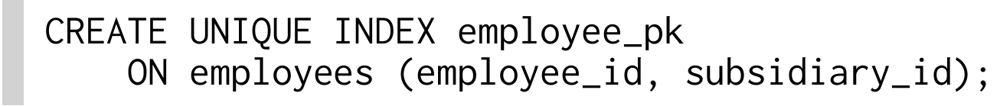
Query cho một nhân viên cụ thể phải xét đến toàn bộ primary key, tức là cũng phải dùng column SUBSIDIARY_ID:
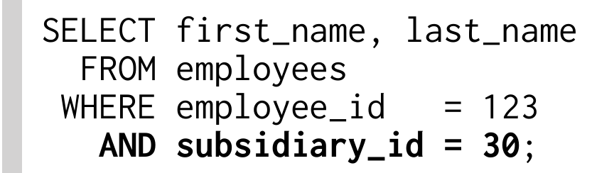
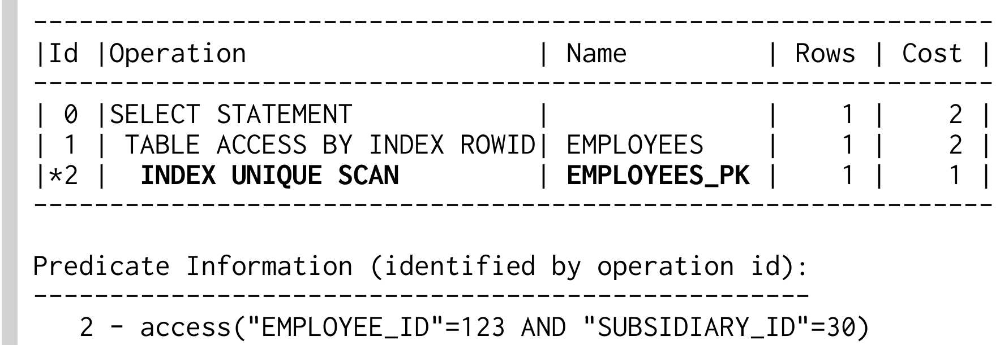
Bất cứ khi nào query dùng toàn bộ primary key, database có thể dùng INDEX UNIQUE SCAN, bất kể index có bao nhiêu column. Nhưng điều gì xảy ra khi chỉ dùng một key column, chẳng hạn khi tìm tất cả nhân viên của một subsidiary?
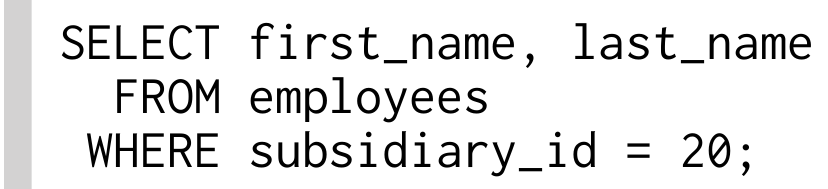
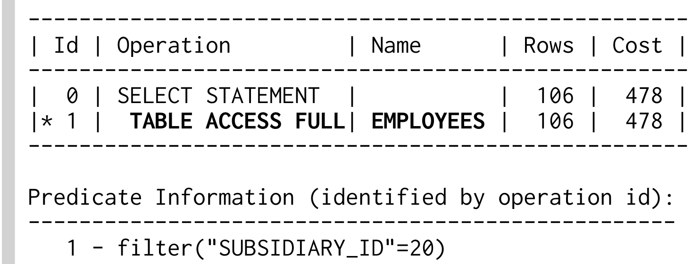
Execution plan cho thấy database không dùng index. Thay vào đó, nó thực hiện FULL TABLE SCAN. Do đó, database đọc toàn bộ table và đánh giá từng row theo where clause. Execution time tăng theo kích thước table: nếu table tăng gấp mười lần, FULL TABLE SCAN mất thời gian gấp mười lần. Nguy hiểm của operation này là nó thường đủ nhanh trong development environment nhỏ, nhưng lại gây vấn đề performance nghiêm trọng trong production.
Operation TABLE ACCESS FULL, còn gọi là full table scan, vẫn có thể là operation hiệu quả nhất trong một số trường hợp, đặc biệt khi lấy một phần lớn table.
Điều này một phần do overhead của chính index lookup, vốn không có với operation TABLE ACCESS FULL. Chủ yếu là vì index lookup đọc từng block một, do database không biết block nào cần đọc tiếp theo cho đến khi block hiện tại đã được xử lý. FULL TABLE SCAN dù sao cũng phải lấy toàn bộ table, nên database có thể đọc các chunk lớn hơn mỗi lần (multi block read). Dù database đọc nhiều dữ liệu hơn, nó có thể cần thực hiện ít read operation hơn.
Database không dùng index vì không thể tùy ý dùng từng column riêng lẻ từ một concatenated index. Quan sát kỹ cấu trúc index sẽ làm rõ điều này.
Concatenated index cũng chỉ là B-tree index như mọi index khác, lưu dữ liệu đã index trong một danh sách được sắp xếp. Database xét từng column theo vị trí của nó trong định nghĩa index để sắp xếp các index entry. Column đầu tiên là tiêu chí sắp xếp chính, còn column thứ hai chỉ quyết định thứ tự nếu hai entry có cùng giá trị ở column đầu tiên, và cứ như vậy.
Vì thế, thứ tự của index hai column giống thứ tự của danh bạ điện thoại: trước hết sắp theo họ, rồi theo tên. Điều đó nghĩa là index hai column không hỗ trợ tìm chỉ theo column thứ hai; việc đó giống như tìm danh bạ điện thoại theo tên.
Đoạn trích index trong Hình 2.1 cho thấy các entry của subsidiary 20 không được lưu cạnh nhau. Cũng thấy rõ không có entry nào có SUBSIDIARY_ID = 20 trong tree, dù chúng tồn tại ở leaf node. Do đó tree không hữu ích cho query này.
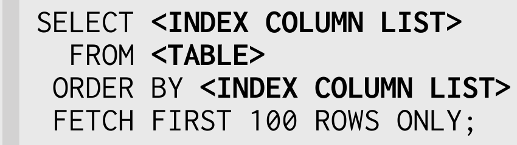
Dĩ nhiên, chúng ta có thể thêm một index khác trên SUBSIDIARY_ID để cải thiện tốc độ query. Tuy nhiên có một giải pháp tốt hơn, ít nhất nếu giả sử việc tìm chỉ bằng EMPLOYEE_ID không có ý nghĩa.
Chúng ta có thể tận dụng thực tế rằng column index đầu tiên luôn dùng được để tìm kiếm. Một lần nữa, nó giống danh bạ điện thoại: bạn không cần biết tên để tìm theo họ. Mẹo là đảo thứ tự column index để SUBSIDIARY_ID ở vị trí đầu tiên:
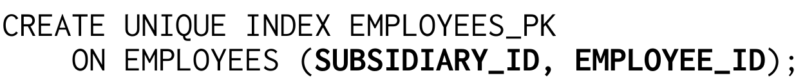
Hai column kết hợp vẫn là duy nhất, nên query với toàn bộ primary key vẫn có thể dùng INDEX UNIQUE SCAN, nhưng chuỗi index entry đã hoàn toàn khác. SUBSIDIARY_ID trở thành tiêu chí sắp xếp chính. Điều đó nghĩa là mọi entry của một subsidiary nằm liên tiếp trong index, nên database có thể dùng B-tree để tìm vị trí của chúng.
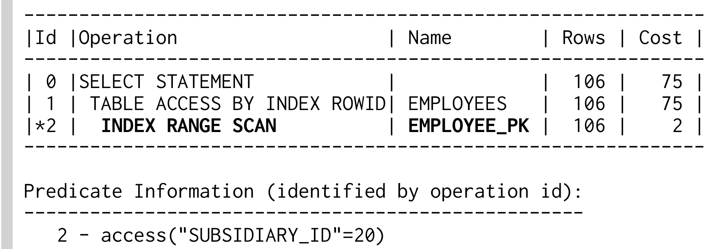
Nói chung, database có thể dùng concatenated index khi tìm bằng các column dẫn đầu (bên trái nhất). Index có ba column có thể dùng khi tìm column đầu tiên, khi tìm hai column đầu tiên cùng nhau, và khi tìm bằng tất cả column.
Dù giải pháp hai index cũng cho select performance rất tốt, giải pháp một index vẫn được ưu tiên. Nó không chỉ tiết kiệm storage space mà còn giảm maintenance overhead cho index thứ hai. Table càng ít index thì performance của insert, delete và update càng tốt.
Để định nghĩa index tối ưu, bạn phải hiểu không chỉ cách index hoạt động mà còn phải biết application query dữ liệu thế nào. Điều đó nghĩa là phải biết các tổ hợp column xuất hiện trong where clause.
Vì vậy, định nghĩa index tối ưu rất khó với external consultant vì họ không có cái nhìn tổng thể về access path của application. Consultant thường chỉ có thể xét một query. Họ không khai thác lợi ích bổ sung mà index có thể mang lại cho các query khác. Database administrator cũng ở vị trí tương tự vì họ có thể biết database schema nhưng không có insight sâu về access path.
Nơi duy nhất kiến thức kỹ thuật về database gặp kiến thức chức năng về business domain là bộ phận development. Developer hiểu dữ liệu và biết access path. Họ có thể đánh index đúng để đem lại lợi ích tốt nhất cho toàn bộ application mà không cần nhiều công sức.
Phần trước đã giải thích cách thu được lợi ích bổ sung từ index hiện có bằng cách thay đổi thứ tự column, nhưng ví dụ chỉ xét hai SQL statement. Tuy nhiên, thay đổi index có thể ảnh hưởng đến mọi query trên table được index. Phần này giải thích cách database chọn index và minh họa các side effect có thể xảy ra khi thay đổi index hiện có.
Index EMPLOYEE_PK đã dùng cải thiện performance của mọi query chỉ tìm theo subsidiary. Tuy vậy, nó có thể dùng cho mọi query tìm theo SUBSIDIARY_ID, bất kể có thêm search criteria nào không. Điều đó nghĩa là index trở nên dùng được cho các query vốn dùng index khác với một phần khác của where clause. Trong trường hợp đó, nếu có nhiều access path khả dụng, optimizer có nhiệm vụ chọn access path tốt nhất.
Thay đổi index cũng có thể có side effect khó chịu. Trong ví dụ của chúng ta, application danh bạ điện thoại nội bộ đã chậm đi rất nhiều từ sau vụ sáp nhập. Phân tích đầu tiên xác định query sau là nguyên nhân làm chậm:
Execution plan là: Ví dụ 2.1. Execution Plan với Primary Key Index Đã Sửa Đổi
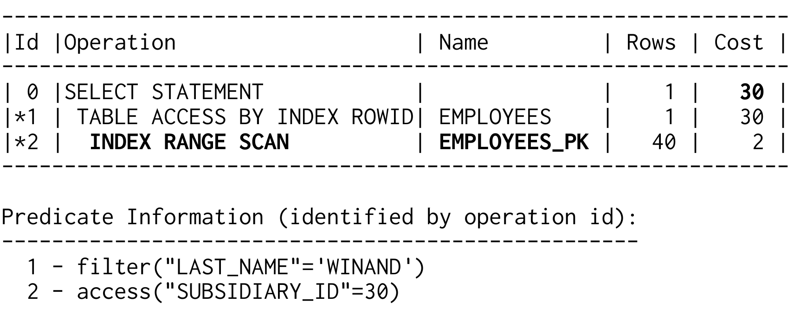
Execution plan dùng một index và có tổng cost value là 30. Đến đây mọi thứ đều ổn. Tuy nhiên, đáng nghi là nó dùng index chúng ta vừa thay đổi; đó là lý do đủ để nghi ngờ thay đổi index gây ra vấn đề performance, nhất là khi nhớ định nghĩa index cũ bắt đầu bằng column EMPLOYEE_ID, vốn hoàn toàn không nằm trong where clause. Trước đây query không thể dùng index đó.
Để phân tích thêm, sẽ hữu ích nếu so sánh execution plan trước và sau thay đổi. Để lấy execution plan gốc, chúng ta có thể triển khai lại định nghĩa index cũ, nhưng đa số database có cách đơn giản hơn để ngăn dùng một index cho query cụ thể. Ví dụ sau dùng Oracle optimizer hint cho mục đích đó.
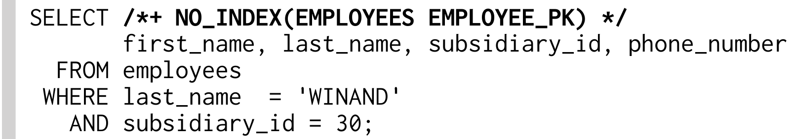
Execution plan được cho là đã dùng trước thay đổi index hoàn toàn không dùng index:
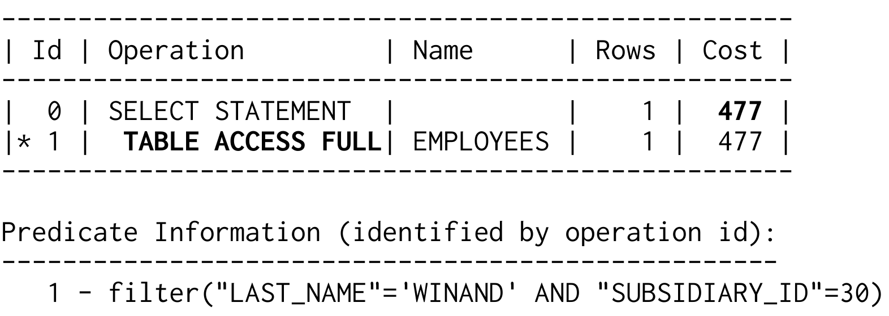
Dù TABLE ACCESS FULL phải đọc và xử lý toàn bộ table, trong trường hợp này nó có vẻ nhanh hơn dùng index. Điều đó đặc biệt lạ vì query chỉ khớp một row. Dùng index để tìm một row lẽ ra phải nhanh hơn nhiều so với full table scan, nhưng trong trường hợp này thì không. Index có vẻ chậm.
Trong những trường hợp như vậy, tốt nhất là lần lượt xem từng bước của execution plan có vấn đề. Bước đầu là INDEX RANGE SCAN trên index EMPLOYEES_PK. Index đó không cover column LAST_NAME; INDEX RANGE SCAN chỉ có thể xét filter SUBSIDIARY_ID. Oracle database cho thấy điều này trong khu vực “Predicate Information”, entry “2” của execution plan. Tại đó có thể thấy các điều kiện được áp dụng cho từng operation.
INDEX RANGE SCAN có operation ID 2 (Ví dụ 2.1 ở trang 19) chỉ áp dụng filter SUBSIDIARY_ID=30. Điều đó nghĩa là nó duyệt index tree để tìm entry đầu tiên có SUBSIDIARY_ID 30. Sau đó nó đi theo leaf node chain để tìm mọi entry khác của subsidiary đó. Kết quả của INDEX RANGE SCAN là danh sách ROWID thỏa điều kiện SUBSIDIARY_ID: tùy quy mô subsidiary, có thể chỉ có vài ROWID hoặc có thể có hàng trăm.
Bước tiếp theo là operation TABLE ACCESS BY INDEX ROWID. Nó dùng ROWID từ bước trước để lấy các row, tức mọi column, từ table. Khi column LAST_NAME đã có, database mới có thể đánh giá phần còn lại của where clause. Điều đó nghĩa là database phải lấy mọi row có SUBSIDIARY_ID=30 trước khi có thể áp dụng filter LAST_NAME.
Response time của statement không phụ thuộc vào kích thước result set mà phụ thuộc vào số nhân viên trong subsidiary cụ thể. Nếu subsidiary chỉ có vài thành viên, INDEX RANGE SCAN có performance tốt hơn. Tuy vậy, TABLE ACCESS FULL có thể nhanh hơn với subsidiary rất lớn vì nó có thể đọc phần lớn table trong một lần (xem “Full Table Scan” ở trang 13).
Query chậm vì index lookup trả về nhiều ROWID, một cho mỗi nhân viên của công ty ban đầu, và database phải lấy chúng riêng lẻ. Đây là sự kết hợp hoàn hảo của hai yếu tố làm index chậm: database đọc một index range rộng và phải lấy nhiều row riêng lẻ.
Việc chọn execution plan tốt nhất cũng phụ thuộc vào data distribution của table, nên optimizer dùng statistics về nội dung database. Trong ví dụ này, một histogram chứa distribution nhân viên theo subsidiary được dùng. Điều này cho phép optimizer estimate số row trả về từ index lookup; kết quả được dùng để tính cost.
Nếu không có statistics, chẳng hạn vì chúng đã bị xóa, optimizer dùng các giá trị mặc định. Statistics mặc định của Oracle database cho thấy index nhỏ với selectivity trung bình. Chúng dẫn đến estimate rằng INDEX RANGE SCAN sẽ trả về 40 row. Execution plan hiển thị estimate này trong column Rows (một lần nữa, xem Ví dụ 2.1 ở trang 19). Rõ ràng đây là estimate thấp hơn rất nhiều, vì có 1000 nhân viên làm việc cho subsidiary này.
Nếu cung cấp statistics chính xác, optimizer làm việc tốt hơn. Execution plan sau cho thấy estimate mới: 1000 row cho INDEX RANGE SCAN. Vì thế optimizer tính cost value cao hơn cho table access tiếp theo.
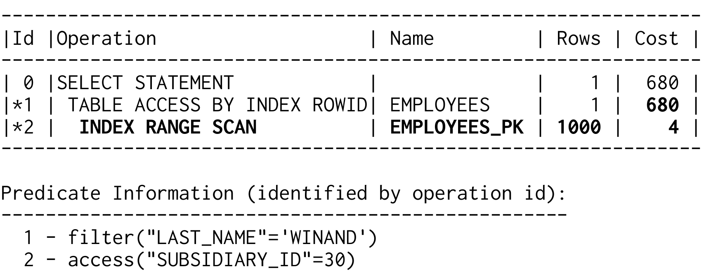
Cost value 680 thậm chí cao hơn cost value của execution plan dùng FULL TABLE SCAN (477, xem trang 20). Vì vậy optimizer sẽ tự động ưu tiên FULL TABLE SCAN.
Ví dụ về index chậm này không nên che khuất thực tế rằng indexing đúng là giải pháp tốt nhất. Dĩ nhiên, tìm theo last name được hỗ trợ tốt nhất bằng index trên LAST_NAME:
Với index mới, optimizer tính cost value là 3:
Ví dụ 2.2. Execution Plan với Index Chuyên Dụng
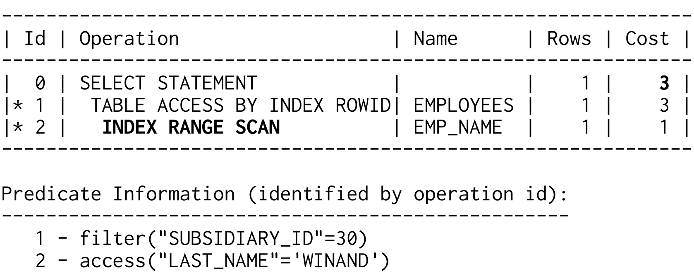
Theo estimate của optimizer, index access chỉ trả về một row. Vì thế database chỉ phải lấy row đó từ table: điều này chắc chắn nhanh hơn FULL TABLE SCAN. Index được định nghĩa đúng vẫn tốt hơn full table scan ban đầu.
Hai execution plan trong Ví dụ 2.1 (trang 19) và Ví dụ 2.2 gần như giống hệt nhau. Database thực hiện cùng operation và optimizer tính các cost value tương tự, nhưng plan thứ hai hoạt động tốt hơn nhiều. Hiệu quả của INDEX RANGE SCAN có thể biến thiên trong một phạm vi rộng, đặc biệt khi sau đó là table access. Dùng index không tự động nghĩa là statement được thực thi theo cách tốt nhất có thể.
Index trên LAST_NAME đã cải thiện performance đáng kể, nhưng nó yêu cầu bạn tìm kiếm bằng đúng chữ hoa/chữ thường như được lưu trong database. Phần này giải thích cách bỏ hạn chế này mà không làm giảm performance.
Lưu ý
MySQL 5.6 không hỗ trợ function-based indexing như mô tả bên dưới. Thay vào đó, virtual column từng được lên kế hoạch cho MySQL 6.0 nhưng chỉ được giới thiệu trong MariaDB 5.2.
Bỏ qua chữ hoa/chữ thường trong where clause rất đơn giản. Chẳng hạn, bạn có thể chuyển cả hai vế so sánh thành ký hiệu toàn chữ hoa:
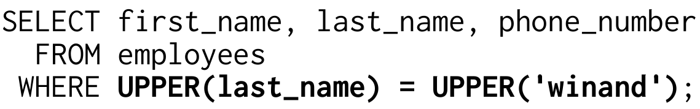
Dù search term hoặc column LAST_NAME dùng kiểu viết hoa nào, function UPPER vẫn làm chúng khớp như mong muốn.
Lưu ý
Một cách khác để khớp không phân biệt hoa thường là dùng “collation” khác. Collation mặc định của SQL Server và MySQL không phân biệt chữ hoa và chữ thường, chúng mặc định case-insensitive.
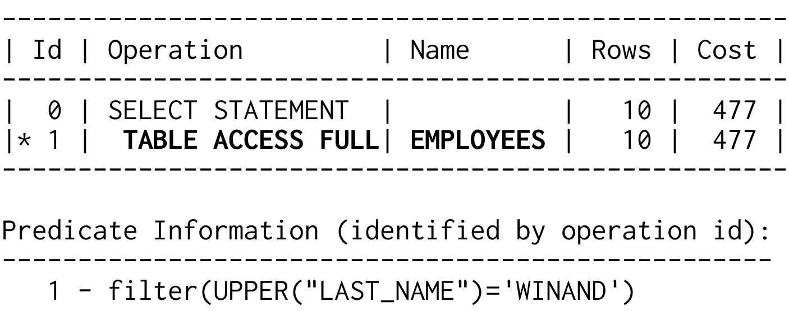
Logic của query này hoàn toàn hợp lý nhưng execution plan thì không.
Chúng ta lại gặp người bạn cũ full table scan. Dù có index trên LAST_NAME, index đó không dùng được vì việc tìm kiếm không diễn ra trên LAST_NAME mà trên UPPER(LAST_NAME). Theo góc nhìn của database, đây là hai thứ hoàn toàn khác nhau.
Đây là cái bẫy mà tất cả chúng ta có thể gặp phải. Chúng ta nhận ra ngay quan hệ giữa LAST_NAME và UPPER(LAST_NAME) và mong database cũng “thấy” như vậy. Trên thực tế, góc nhìn của optimizer giống thế này hơn:
Function UPPER chỉ là một black box. Các parameter của function không liên quan vì không có quan hệ tổng quát nào giữa parameter của function và kết quả.
Để hỗ trợ query đó, chúng ta cần một index cover search term thực tế. Điều đó nghĩa là không cần index trên LAST_NAME mà trên UPPER(LAST_NAME):
Index có định nghĩa chứa function hoặc expression được gọi là function-based index (FBI). Thay vì sao chép trực tiếp dữ liệu column vào index, function-based index áp dụng function trước rồi đưa kết quả vào index. Do đó index lưu tên ở dạng toàn chữ hoa.
Database có thể dùng function-based index nếu expression chính xác của định nghĩa index xuất hiện trong SQL statement, như ví dụ trên. Execution plan xác nhận điều này:
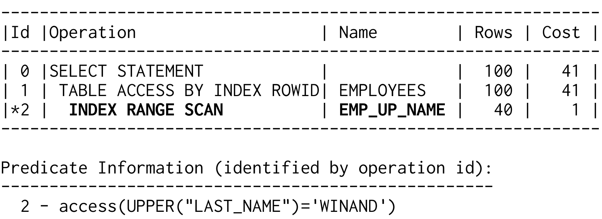
Đây là INDEX RANGE SCAN thông thường như đã mô tả ở Chương 1. Database duyệt B-tree và đi theo leaf node chain. Không có operation hoặc keyword riêng cho function-based index.
Cảnh báo
Đôi khi ORM tool dùng UPPER và LOWER mà developer không biết. Ví dụ, Hibernate chèn LOWER ngầm cho các tìm kiếm không phân biệt hoa thường.
Execution plan vẫn chưa giống execution plan ở phần trước không dùng UPPER; estimate số row quá cao. Đặc biệt lạ là optimizer dự kiến lấy nhiều row từ table hơn số row mà INDEX RANGE SCAN trả về ngay từ đầu. Làm sao nó có thể lấy 100 row từ table nếu index scan trước đó chỉ trả về 40 row? Câu trả lời là không thể. Những estimate mâu thuẫn như vậy thường chỉ ra vấn đề với statistics. Trong trường hợp này, nguyên nhân là Oracle database không cập nhật table statistics khi tạo index mới (xem thêm “Oracle Statistics for Function-Based Indexes” ở trang 28).
Sau khi cập nhật statistics, optimizer tính các estimate chính xác hơn:
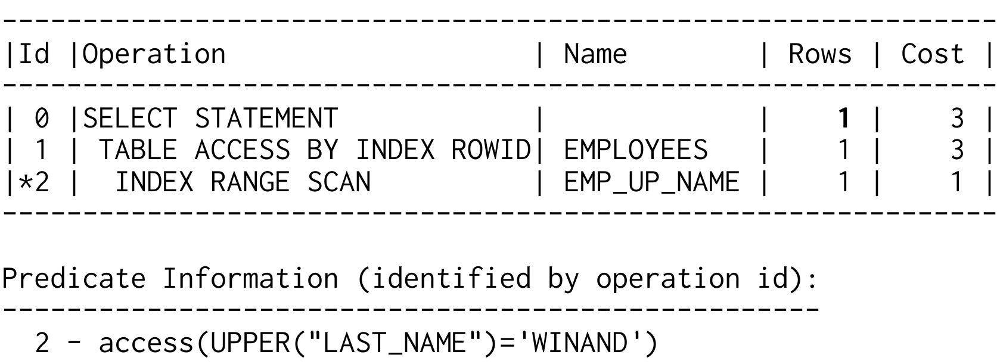
SQL Server có thể dùng index này bất cứ khi nào expression đã index xuất hiện trong statement. Bạn không cần viết lại query để dùng computed column.
Sau khi tạo function-based index, hãy thu thập statistics
trên cả index và base table bằng package DBMS_STATS.
Statistics như vậy sẽ giúp Oracle Database
quyết định chính xác khi nào nên dùng index.
- Oracle Database SQL Language Reference
Khuyến nghị cá nhân của tôi còn đi xa hơn: sau mỗi thay đổi index, hãy cập nhật statistics cho base table và mọi index của nó. Tuy vậy, điều đó cũng có thể dẫn đến side effect không mong muốn. Hãy phối hợp việc này với database administrator (DBA) và backup statistics gốc.
Function-based indexing là cách tiếp cận rất tổng quát. Ngoài function như UPPER, bạn còn có thể index expression như A + B và thậm chí dùng user-defined function trong định nghĩa index.
Có một ngoại lệ quan trọng. Chẳng hạn, không thể tham chiếu current time trong định nghĩa index, trực tiếp hay gián tiếp, như ví dụ sau.
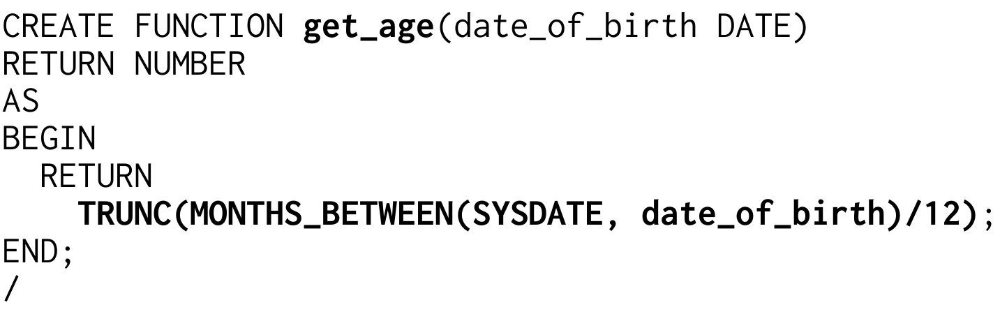
Function GET_AGE dùng ngày hiện tại (SYSDATE) để tính tuổi dựa trên ngày sinh được cung cấp. Bạn có thể dùng function này ở mọi phần của SQL query, ví dụ trong select và where clause:
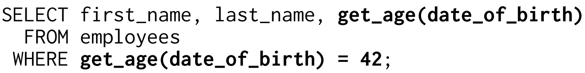
Query liệt kê mọi nhân viên 42 tuổi. Dùng function-based index là ý tưởng hiển nhiên để tối ưu query này, nhưng bạn không thể dùng function GET_AGE trong định nghĩa index vì nó không deterministic. Điều đó nghĩa là kết quả của function call không hoàn toàn được quyết định bởi parameter của nó. Chỉ function luôn trả về cùng kết quả cho cùng parameter, tức function deterministic, mới có thể được index.
Lý do cho hạn chế này đơn giản. Khi insert row mới, database gọi function và lưu kết quả trong index, rồi kết quả đó nằm yên, không đổi. Không có process định kỳ nào cập nhật index. Database chỉ cập nhật tuổi đã index khi ngày sinh bị thay đổi bằng update statement. Sau sinh nhật tiếp theo, tuổi được lưu trong index sẽ sai.
Ngoài việc phải deterministic, PostgreSQL và Oracle database yêu cầu function được khai báo deterministic khi dùng trong index, nên bạn phải dùng keyword DETERMINISTIC (Oracle) hoặc IMMUTABLE (PostgreSQL).
Cẩn trọng
PostgreSQL và Oracle database tin vào khai báo DETERMINISTIC hoặc IMMUTABLE, nghĩa là chúng tin developer. Bạn có thể khai báo function GET_AGE là deterministic và dùng nó trong định nghĩa index. Bất kể khai báo đó, nó sẽ không hoạt động như dự định vì tuổi lưu trong index sẽ không tăng theo năm tháng; nhân viên sẽ không già đi, ít nhất là trong index.
Các ví dụ khác về function không thể được “index” là random number generator và function phụ thuộc environment variable.
Hãy suy nghĩ
Làm sao vẫn có thể dùng index để tối ưu query cho tất cả nhân viên 42 tuổi?
Over-Indexing
Nếu khái niệm function-based indexing còn mới, bạn có thể bị cám dỗ index mọi thứ, nhưng thực tế đây là điều cuối cùng bạn nên làm. Lý do là mọi index đều tạo ra maintenance liên tục. Function-based index đặc biệt rắc rối vì chúng khiến việc tạo index dư thừa rất dễ dàng.
Tìm kiếm không phân biệt hoa thường ở trên cũng có thể triển khai bằng function LOWER:
SELECT first_name, last_name, phone_number
FROM employees
WHERE LOWER(last_name) = LOWER('winand');
Một index không thể hỗ trợ cả hai cách bỏ qua chữ hoa thường. Dĩ nhiên, chúng ta có thể tạo index thứ hai trên LOWER(last_name) cho query này, nhưng điều đó nghĩa là database phải duy trì hai index cho mỗi statement insert, update và delete (xem thêm Chương 8, “Modifying Data”). Để một index là đủ, bạn nên dùng nhất quán cùng một function trong toàn application.
Mẹo
Hợp nhất access path để một index có thể được dùng bởi nhiều query.
Mẹo
Luôn hướng đến việc index dữ liệu gốc vì đó thường là thông tin hữu ích nhất có thể đưa vào index.